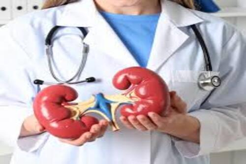
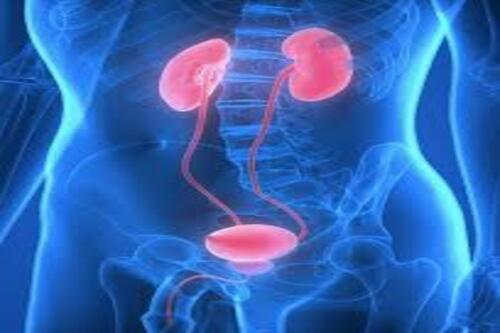

L'urologie est la spécialité médico-chirurgicale qui diagnostique et traite les affections des voies urinaires
(reins, vessie, urètre, uretères) chez l'homme et la femme, ainsi que les organes génitaux de l'homme (prostate, testicules, verge


L'urologue intervient sur un grand nombre de troubles, incluant notamment :
Le spécialiste utilise des techniques de pointe pour ses diagnostics et interventions, allant des examens
endoscopiques (cystoscopies) et bilans urodynamiques à des chirurgies mini-invasives et robotiques.
Vous pouvez consulter l'annuaire des professionnels et les informations officielles sur le site de l' Association
Française d'Urologie pour trouver un praticien qualifié près de chez vous.